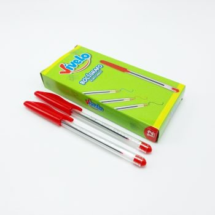

CAFE
LAPICES
El Mocca es una exquisita combinación de espresso, chocolate y leche, creando una bebida indulgente y reconfortante. La intensidad del café se equilibra con la dulzura del chocolate, ofreciendo una experiencia deliciosa y cremosa. Decorado con crema batida o cacao, es la elección perfecta para los amantes de sabores ricos y reconfortantes.
IRISH
El Irish Coffee es una irresistible mezcla de café, whisky irlandés y crema. Esta bebida caliente combina la robustez del café con la calidez y el sabor distintivo del whisky irlandés, creando una experiencia reconfortante y ligeramente alcohólica. La crema flota delicadamente sobre la superficie, añadiendo suavidad y un toque indulgente. Ideal para quienes buscan un estimulante con un toque de espirituoso, el Irish Coffee es una elección clásica y reconfortante.
LATTE

El Latte es una deliciosa y suave bebida de café que combina espresso y leche vaporizada, resultando en una textura aterciopelada y un sabor equilibrado. Con una proporción mayor de leche que el cappuccino, el Latte destaca por su cremosidad y suavidad, permitiendo que los matices del espresso se mezclen armoniosamente con la leche. Decorado ocasionalmente con arte latte en la superficie, esta bebida es perfecta para aquellos que buscan disfrutar de un café más suave y reconfortante.
ESPRESSO

El Espresso es una concentrada y potente bebida de café que se elabora al forzar agua caliente a través de granos de café finamente molidos. Este método de preparación resulta en una pequeña cantidad de líquido altamente concentrado, conocido como shot de espresso. La bebida es apreciada por su intensidad y sabor fuerte, resaltando las características únicas de los granos de café utilizados. Servido en tazas pequeñas, el espresso es la base de muchas otras bebidas de café y es la elección preferida para aquellos que buscan una experiencia de café concentrada y vigorizante.
AMERICANO

El Americano es una bebida de café suave y diluida que se obtiene al añadir agua caliente a un shot de espresso. Esta preparación nace como una adaptación del espresso italiano para lograr un sabor más similar al café filtrado tradicional. El resultado es una bebida más extensa en volumen, manteniendo algunas de las características del espresso, pero con una textura y sabor más parecidos al café regular. El Americano es apreciado por su simplicidad y versatilidad, siendo una opción popular para aquellos que prefieren un café más suave y menos concentrado.
CAPUCCINO

El Cappuccino es una clásica y deliciosa bebida de café que combina partes iguales de espresso, leche vaporizada y espuma de leche. Esta mezcla crea una textura cremosa y una armoniosa fusión de sabores entre la intensidad del espresso y la suavidad láctea. Servido en una taza más pequeña que el Latte, el Cappuccino a menudo se presenta con una capa espumosa decorativa en la parte superior. Su equilibrio entre el café fuerte y la cremosidad lo convierte en una elección popular para aquellos que buscan una experiencia de café más intensa y reconfortante.
BOMBON

El Bombón es una irresistible y dulce variante de café originaria de España. Se prepara con un shot de espresso y se sirve sobre una cucharada generosa de leche condensada. La combinación del intenso sabor del espresso con la dulzura cremosa de la leche condensada crea una experiencia deliciosa y reconfortante. La presentación a menudo incluye capas diferenciadas de café y leche condensada, creando un aspecto visual atractivo. El Bombón es apreciado por aquellos que disfrutan de la armonía entre el robusto sabor del café y la indulgente dulzura de la leche condensada.
CARAJILLO

El Carajillo es una bebida de café con un toque alcohólico, típicamente preparada con un shot de espresso y licor. La elección del licor puede variar, siendo el brandy o el licor de whisky opciones comunes. La bebida se completa con azúcar o una rodaja de limón, dependiendo de las preferencias regionales.
LUNGO

El Lungo es una variedad de café espresso que se distingue por su mayor cantidad de agua en la preparación. Se obtiene al pasar una mayor cantidad de agua caliente a través de la misma cantidad de café molido que se utiliza para un espresso estándar. Como resultado, se logra una bebida más extensa en volumen que el espresso tradicional, manteniendo algunas de las características de intensidad y sabor.
RISTRETTO

El Ristretto es una variante de espresso que se caracteriza por ser más corto y más concentrado que un espresso estándar. Se obtiene utilizando la misma cantidad de café molido que un espresso, pero con una cantidad de agua aún menor. El resultado es una bebida de pequeño volumen, pero con una intensidad de sabor más pronunciada.
MACCHIATTO

El Macchiato, es una bebida de café que combina un shot de espresso con una pequeña cantidad de leche o espuma de leche. Se puede disfrutar en varias variaciones, siendo el Espresso Macchiato y el Latte Macchiato las más comunes.
CAFE CON LECHE

El café con leche es una bebida de café que combina partes iguales de café y leche, ofreciendo una mezcla equilibrada de robustez y suavidad. Este café se prepara vertiendo un shot de espresso en una taza y luego agregando una cantidad igual de leche vaporizada. La proporción de café y leche puede ajustarse según las preferencias personales.
VIENES

El café vienés es una especialidad de café originaria de Viena, Austria. Se trata de un café negro, generalmente un espresso, que se sirve con una capa espesa de crema batida encima. La crema batida no se mezcla con el café, sino que se coloca en la parte superior, proporcionando una textura suave y cremosa al beberlo.
FRAPPE

El Frappé es una refrescante y popular bebida de café fría, originaria de Grecia. Se prepara mezclando café instantáneo, azúcar, agua y hielo en una licuadora. La mezcla se bate hasta obtener una consistencia espumosa y se sirve en un vaso con hielo. Esta bebida tiene una textura cremosa y una combinación de sabores fuertes de café con un toque dulce. A menudo, se puede personalizar agregando leche o crema, y también se pueden añadir sabores adicionales como vainilla o caramelo.
AZTECA

Los ingredientes principales de esta receta son un buen café espresso, y aquí, en Qualery, tienes donde elegir. Puede que te inetrese el café méxicano Pico de Orizaba, un delicioso café 100% arábica y cultivado y procesado de manera natural, con unos matices a chocolate picante y tabaco. Además, a este café espresso le añadiremos helado de chocolate, una capa de deliciosa nata o chantilly, un toque de canela en polvo y otras especias, hielo y azúcar.